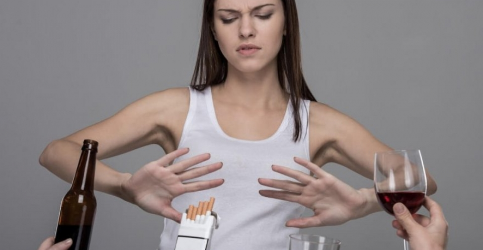
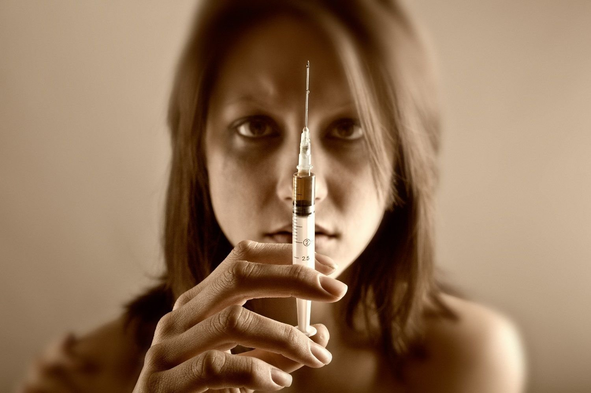
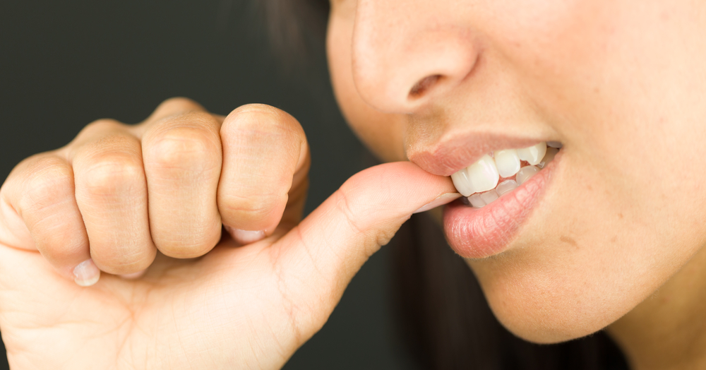

Вредные привычки и их последствия
Привычное действие – это и есть привычка. Но, с одной стороны, бывают привычки и манеры хорошие, полезные и, с другой, бывают дурные, или вредные привычки.
Полезными привычками мы можем назвать такие, как делать зарядку по утрам, мыть руки перед едой, убирать за собой все вещи на место,
чистить каждый день зубы и т.п.

Вредную привычку можно рассматривать как болезнь или патологическую зависимость. Но наряду с вредными привычками существуют
неполезные действия, которые нельзя рассматривать как болезнь, но которые возникают из-за неуравновешенности нервной системы.
Что можно назвать вредными привычками? К вредным привычкам можно отнести следующие действия:
- Алкоголизм
- Наркомания
- Курение
- Игровая зависимость (лудомания)
- Шопингомания (шопоголизм) – «навязчивая магазинная зависимость» или ониомания
- Переедание
- Телевизионная зависимость
- Интернет-зависимость
- Привычка грызть ногти
- Ковыряние кожи
- Ковыряние в носу (ринотиллексомания)
- Щелкание суставами
- Техномания
- Привычка грызть карандаш или ручку
- Привычка сплёвывать на пол
- Употребление нецензурных выражений
- Злоупотребление «словами-паразитами»
- и др.
Алкоголизм
Cамая распространенная вредная привычка, зачастую превращается в серьезное заболевание, характеризующееся
болезненным пристрастием к алкоголю (этиловому спирту), с психической и физической зависимостью от него,
сопровождающаяся систематическим потреблением алкогольных напитков несмотря на негативные последствия.
Алкоголизм – аутодеструктивный (саморазрушающий) тип девиатного, зависимого поведения. Возникновение
и развитие алкоголизма зависит от объёма и частоты употребления алкоголя, а также индивидуальных факторов и
особенностей организма. Некоторые люди подвержены большему риску развития алкоголизма ввиду специфичного
социально-экономического окружения, эмоциональной и/или психической предрасположенности, а также наследственных причин.
Установлена зависимость случаев острого алкогольного психоза от разновидности гена hSERT (кодирует белок переносчика
серотонина). Однако до настоящего времени не обнаружено специфических механизмов реализации
аддиктивных свойств алкоголя.
Наркомания
Хроническое прогредиентное (развитие болезни с нарастанием симптоматики) заболевание,
вызванное употреблением веществ-наркотиков.

Разные наркотики вызывают разную зависимость. Одни наркотики вызывают сильную психологическую зависимость,
но не вызывают физической зависимости. Другие же, напротив, вызывают сильную физическую зависимость. Многие наркотики
вызывают и физическую, и психологическую зависимость.
Различают позитивную привязанность — приём наркотика для достижения приятного эффекта
(эйфория, чувство бодрости, повышенное настроение) и негативную привязанность — приём наркотика для того,
чтобы избавиться от напряжения и плохого самочувствия. Физическая зависимость означает тягостные и даже
мучительные ощущения, болезненное состояние при перерыве в постоянном приёме наркотиков (т. н. абстинентный синдром, ломка).
От этих ощущений временно избавляет возобновление приёма наркотиков.
В конце XX века Россия вслед за многими странами мира столкнулось с эпидемией наркомании.
Согласно оценкам Федеральной службы по контролю за оборотом наркотиков, в настоящее время в
Российской Федерации насчитывается до 2.5 миллионов наркозависимых. Абсолютное большинство из них, около 90%,
составляют героиновые наркоманы. Наркомания с начала девяностых годов XX столетия приобрела характер эпидемии
и является угрозой национальной безопасности страны. Страна ежегодно теряет от героина 30-40 тысяч молодых людей.
Наркотизация населения является основной причиной распространения серьезных заболеваний: ВИЧ и вирусных гепатитов.
Из 500 000 официально зарегистрированных ВИЧ-инфицированных в России около 60% составляют люди, заразившиеся через
инъекционное употребление наркотиков. До 90% наркозависимых больны гепатитом В или С.
Игровая зависимость
Предполагаемая форма психологической зависимости, проявляющаяся в навязчивом
увлечении видеоиграми и компьютерными играми, а также лудомания – патологическая склонность к азартным играм
заключается в частых повторных эпизодах участия в азартных играх, которые доминируют в жизни человека и ведут
к снижению социальных, профессиональных, материальных и семейных ценностей, такой человек не уделяет должного
внимания своим обязанностям в этих сферах.
Играми, вызывающими самую сильную зависимость, чаще всего считаются сетевые, особенно MMORPG. Известны случаи,
когда слишком долгая игра приводила к фатальным последствиям.
Ониомания
Непреодолимое желание что-либо покупать, не
обращая внимания на необходимость и последствия. Покупки становятся и отдыхом, и развлечением, и самостоятельным смыслом.
В просторечии эту манию часто называют шопинголизм или шопоголизм.
По мнению врачей чаще всего ониомания развивается у женщин на почве недостатка внимания,
чувства одиночества и внутренней пустоты, потребности в признании и любви, а также в период депрессии
из-за потери партнера.
Встречаются и другие причины:
- Жажда адреналина. Организм быстро привыкает к адреналину и начинает нуждаться во всё больших его дозах.
Такие люди занимаются экстремальными видами спорта. В магазине можно тоже получить дозу адреналина – принятие
решения о покупке и возможное разочарование являются микрострессами.
- Иллюзия власти. Покупаются не столько вещи для личного потребления, сколько некие атрибуты власти, в том числе
в форме отношения продавцов к покупателю: уважение, услужливое обращение, льстивые похвалы, фирменные пакеты для покупок.
- Иллюзия свободы и контроля над своей жизнью. Шоппинг снимает у шопоголика депрессию и тревогу, повышает
самоуважение и уверенность в себе – он может себе позволить купить то, что сейчас захотелось, а не то, что
рекомендовали или что просто необходимо. И человек получает ощущение свободы от покупок, даже если вещи ему не нужны.
И если вы идете в магазин без необходимости или надобности.
Психогенное переедание
Расстройство приёма пищи, представляющее собой переедание, приводящее к появлению лишнего веса,
и являющееся реакцией на дистресс (отрицательная неспецифическая реакция организма животного на любое внешнее воздействие.
Наиболее тяжелой формой дистресса является шок). Может следовать за утратой близких, несчастными случаями, хирургическими
операциями и эмоциональным дистрессом, особенно у лиц, предрасположенных к полноте.
Психогенное переедание — это комплексная проблема, сочетающая в себе как чисто психологический, так и чисто физиологический
факторы. Физиологический фактор — это проблемы связанные с лишним весом: нарушение обмена веществ, повышенная нагрузка на
организм и др. Психологический фактор — это с одной стороны тяжёлые эмоциональные переживания страдающего психогенным
перееданием человека, а с другой — трудности, связанные с соблюдением человеком диеты. Как следствие, психогенное переедание
зачастую требует одновременной работы с обоими факторами, путём обращения как к психологу/психиатру, так и к диетологу/врачу.
Телевизионная зависимость.
Телевидение стало самым распространенным способом бегства от себя в мир иллюзий.
Оно вошло в жизнь практически каждого современного человека, стало привычным спутником его жизни.
По статистическим данным в среднем каждый человек примерно по 3 часа в день проводит перед телевизором. Это составляет
примерно половину его свободного времени и около 9 лет из жизни каждого. Люди регулярно отдают телевиденью время своего
отдыха. При том, что нередко зрители негативно оценивают качество передач, считают себя способными «прямо здесь и сейчас»
выключить телевизор, те же люди продолжают часами ждать возле телевизоров оказываясь неспособными «оторваться» от
просмотра. То есть речь идет уже о частичной потере контроля над влечением к просмотру телепередач.
Признаками телевизионной зависимости являются:
- плохое самочувствие, тревога, раздражительность, слабость при завершении телепросмотра;
- ощущение утраты реальности, растерянность при внезапном отключении телевизора;
- незапланированные просмотры;
- безуспешность действий направленных на сокращение времени проведенного перед телевизором и связанное с этим чувство вины;
- сосредоточенность внимания на событиях, сюжетных линиях телепередач, стремление переводить тему разговора на
обсуждении увиденного по телевизору;
- снижение профессиональной активности или пренебрежение семейными обязанностями из-за телевизора;
- любые другие формы отдыха (чтение, прогулки, спорт, хобби) начинают уступать свои позиции,
время ранее затрачиваемое на них заполняется просмотром телепередач;
- при отказе от телепросмотра на 3 дня и более возникают следующие явления: дискомфорт,
слабость, упадок сил, апатия, безразличие, тоска, тревога, чувство пустоты, невосполнимой утраты,
неудовлетворенность жизнью, снижение нетрудоспособности и семейные конфликты, агрессия, раздражительностью.
Интернет-зависимость
Психическое расстройство, навязчивое желание подключиться к Интернету и болезненная неспособность
вовремя отключиться от Интернета. Интернет-зависимость является широко обсуждаемым вопросом, но её статус пока находится
на неофициальном уровне.
Британские ученые считают, что излишне активный интернет-серфинг ведет к депрессии. Те люди, которые проводят много времени
в онлайне, подвержены плохому настроению и чаще чувствуют себя несчастными.
Исследование показало, что интернет-зависимостью страдает около 10% пользователей во всем мире. Некоторые из них
самостоятельно признают свою болезнь и сообщают, что они много времени проводят в чатах и социальных сетях.
Главная проблема многих пользователей – слишком много времени, проводимого в онлайне.
Многие люди не могут контролировать, сколько времени они просидели в интернете. Это им мешает вести полноценную жизнь.
Основные 6 типов интернет-зависимости таковы:
- Навязчивый веб-серфинг — бесконечные путешествия по Всемирной паутине, поиск информации.
- Пристрастие к виртуальному общению и виртуальным знакомствам — большие объёмы переписки,
постоянное участие в чатах, веб-форумах, избыточность знакомых и друзей в Сети.
- Игровая зависимость — навязчивое увлечение компьютерными играми по сети.
- Навязчивая финансовая потребность — игра по сети в азартные игры, ненужные
покупки в интернет-магазинах или постоянные участия в интернет-аукционах.
- Пристрастие к просмотру фильмов через интернет, когда больной может
провести перед экраном весь день не отрываясь из-за того, что в сети можно
посмотреть практически любой фильм или передачу.
- Киберсексуальная зависимость — навязчивое влечение к посещению порносайтов и занятию киберсексом.
Привычка грызть ногти
Науке до сих пор неизвестно, что заставляет людей грызть ногти. Хотя теорий, пытающихся
объяснить, почему люди грызут ногти, немало: от задумчивости до напряжения.

Одна из самых распространенных теорий гласит, что привычка грызть ногти появляется на почве стресса. Грызут, чтобы
расслабиться, грызут, чтобы лучше думалось, грызут, когда нервничают.
Французские социологи провели опрос на смешную тему: «Кто и в каких ситуациях грызет ногти?». Выяснилось, что на
обкусывание ногтей французов чаще всего провоцируют рабочие ситуации.
Обдумывая рабочие вопросы или испытывая
беспокойство из-за работы, грызут ногти 26,5% респондентов. Среди причин на втором месте по популярности стоит
обкусывание ногтей во время шопинга (что, видимо, символизирует муки выбора), затем следуют
размышления по поводу
экономической ситуации и беспокойство за детей или родителей.
- Привычка, заимствованная у родителей. Есть «народная» теория, согласно которой в привычке грызть ногти
виновата наследственность: дескать, если родители грызли ногти – то и дети будут заниматься тем же самым, уж ничего
не поделать.
Но не стоит сваливать на поведенческие гены то, что имеет гораздо более простое объяснение. Ребенок видит, как родители
грызут ногти. Точно так же он видит, как родители переходят дорогу на красный свет, хамят окружающим и ковыряют в носу.
- Агрессия так и брызжет. Еще одна теория связывает привычку грызть ногти с выплеском агрессии, направленной на
самого себя. То есть, человек грызущий ногти, имеет что предъявить себе самому: он буквально гложет себя, занят
самообвинениями и самобичеваниями. Сложно возразить авторам теории: на любой аргумент, вроде: «А вот я грызу ногти,
но ни в чем себя не обвиняю», всегда можно возразить: «Просто вы, батенька, хорошо умеете подавлять свои чувства.
Зато ваше подсознание в это самое время…».
- Обессивно-компульсивное расстройство. Случается, что грызение ногтей становится признаком данного синдрома.
Суть его в том, что у людей постоянно возникают навязчивые, тревожащие их представления, и чтобы обуздать тревогу,
у них появляются различные ритуалы: накручивать волосы на палец, постоянно поправлять воротник или грызть ногти.
- Хрупкость ногтевой пластины. Иногда грызение ногтей связано с хрупкостью ногтевой пластины. Некоторые считают,
что если ногти регулярно слоятся и ломаются, проще всего обкусать поврежденный ноготь. Многие из них затем стараются
исправить форму: «догрызть» до совершенства, не прибегая к помощи маникюрных ножниц и пилочки.
Привычка ковырять кожу
Это может быть ковыряние кожи лица и/или тела, кожи головы, кожи пальцев рук и т. д.
Иногда носит характер привычки самостоятельно избавляться от недостатков на лице — самостоятельные механические
чистки лица, в худшем случае — привычка постоянно трогать кожу и выдавливать ногтями воспаленные участки или сдирать
подсыхающие болячки.
При этом высока вероятность еще большего воспаления, а также ухудшения состояния кожи, образования шрамиков,
больших открытых пор, в том числе — опасность заражения крови. В редких случаях обладатель этой привычки
ковыряет кожу и кладет содержимое в рот.
Причины:
- За данной привычкой может скрываться невроз, вызванный стрессами и выражающийся в потребности причинять себе
физическую боль после получения боли эмоциональной — пантономия. Причинение себе физической боли приносит
временное успокоение, если запрещать себе это — может возникнуть «ломка», появляется тревожность, привычка
трансформируется в новые, другие формы — ковырять в носу, грызть ногти и т. д.
- Тот же самый невроз может выражаться в потребности постоянного задействия рук — в постоянной активации мелкой
моторики. Трансформируется в своего рода ритуал для успокоения нервов.
- Мания идеального лица: малейшая неровность или прыщик вызывают неудовольствие и желание удалить, сковырнув.
- Проблема психосоматики — навязчивые действия, навязчивые движения рук, ритуалы.
Ринотиллексомания
Человеческая привычка извлекать из ноздрей засохшие выделения пальцем. Умеренное ковыряние не рассматривается
отклонением от нормы, но чрезмерное увлечение этим занятием может свидетельствовать о психологическом или психиатрическом
расстройстве. Долгое ковыряние может вызвать кровотечение из носа и более серьёзные повреждения. Многие медицинские
источники рассматривают ковыряние в носу как один из симптомов отклонения от нормального поведения у детей. В частности,
это занятие считается признаком расстройства внимания и гиперактивности (attention deficit hyperactivity disorder; ADHD).
Ковыряние в носу наблюдается и в случаях более серьёзных отклонений, например при синдроме Смита-Магениса (генетическое
нарушение, возникающее при отсутствии небольшого участка 17-й хромосомы и проявляющееся характерным строением тела,
особенностями развития и поведения. Первая группа детей была описана в 1980 году в США врачом-клиницистом Энн Смит и
цитогенетиком Эллен Магенис).
Щёлкание суставами
Порой встречаются любители намеренно исполнить «музыку» на своих пальцах. Начинается это «увлечение» обычно еще в детстве,
это проделывается снова и снова на радость изумленной публике, и в результате привычка «хрустеть пальцами» остается на
всю жизнь. При этом суставы постоянно травмируются и теряют подвижность. А вместе с тем растет риск появления раннего артроза.
О его появлении можно не подозревать довольно долго. Суставные хрящи разрушаются годами. Их гладкая, зеркальная поверхность
растрескивается, а покрывающая ее клейкая смазка постепенно теряет влагу. В результате кости в месте соединения приобретают
неровности и шероховатости. Трение между ними увеличивается, а их перемещение относительно друг друга сопровождается
специфическим треском. Сами хрящи не имеют нервных окончаний, поэтому нет и болезненных ощущений. Но с возрастом все эти
изменения прогрессируют, и кости, объединенные в сустав, полностью оголяются. А в них-то как раз нервные окончания
присутствуют. При движении головки костей трутся между собой, вызывая сильную боль. Вокруг суставов находится большое
количество сухожилий, которые тоже втягиваются в процесс разрушения, деформируются, в них начинаются разные воспалительные
явления.
Отказаться от такой привычки можно только с помощью силы воли, медикаментозного лечения не существует. А та скованность
в пальцах, которая образуется если долго не хрустеть – со временем проходит.
Будьте осторожны с вредными привычками, зачастую они приводят к неблагоприятным последствиям, либо являются предвестниками
серьезных заболеваний.